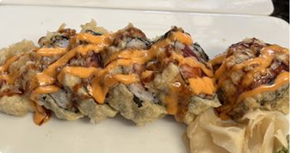
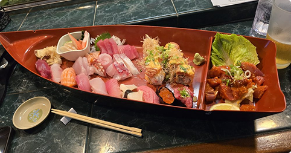
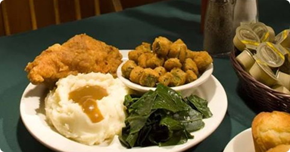
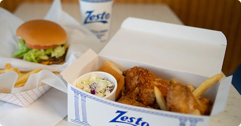
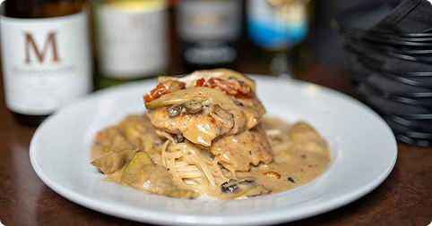
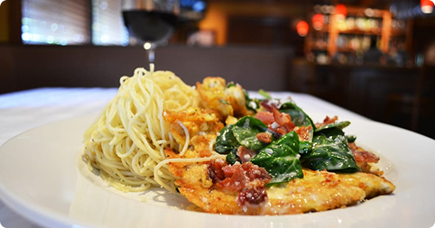
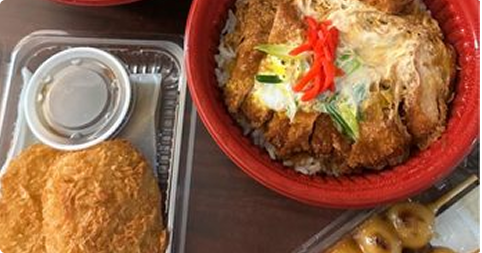
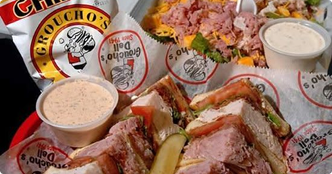

Latino
Celebrates vibrant, bold flavors built on staples like corn, beans, rice, peppers, and fresh produce. Dishes frequently highlight slow-cooked meats, citrus marinades, and aromatic herb-and-spice blends like cilantro, cumin, and garlic.

A Fuego 787
A Fuego 787 serves authentic Puerto Rican cocina criolla focused on savory, slow-roasted, and garlic-infused flavors

Taquería Jalisco
Taquería Jalisco Restaurant Click to open side panel for more information is a popular, laid-back Mexican eatery. Known for its colorful digs, quick service, and authentic dishes, it is a local favorite for casual dining and takeout.
Asian
Focuses on harmonizing contrasting flavors—sweet, salty, sour, bitter, and umami—using quick cooking methods like stir-frying, steaming, and simmering. Signature ingredients include rice, noodles, soy sauce, sesame oil, ginger, and fresh herbs.

M Vista
M Vista is a popular Asian fusion and sushi restaurant. Part of the local Miyo's restaurant group, it features a sleek, modern, and high-energy atmosphere suitable for casual lunches, evening drinks, or group dining.

Inakaya
A long-running favorite for traditional Japanese dining, featuring fresh nigiri, sashimi, sushi boats, tempura, and authentic floor-cushion seating rooms.
Southern
Rooted in traditional American comfort food, featuring slow-cooked meats, rich gravies, pan-frying, and baking. Key highlights include smoked barbecue, buttermilk biscuits, fried chicken, corn bread, and hearty greens.

Lizards Thicket
Lizard's Thicket Restaurant Click to open side panel for more information is a legendary, family-owned local restaurant chain in the Columbia known for classic Southern country cooking and meat-and-three comfort food at budget-friendly prices.

Zesto
Zesto is a long-running, retro spot landmarked by its giant soft-serve cone sign on 12th Street. Operating since 1949, it is famous for crispy, pressure-fried chicken, classic "Zestoburgers", chili slaw dogs, and chocolate-dipped soft-serve cones.
Italian
Emphasizes high-quality, simple ingredients allowed to shine through classic preparation. Built around olive oil, fresh garlic, tomatoes, pasta, cheese, and fresh herbs like basil and oregano.

Villa Tronco
Villa Tronco serves traditional, Southern Italian comfort food made from original family recipes—most notably their house-made square thin-crust pizza, baked pasta, and signature chicken and veal entrees, followed by their legendary homemade cheesecake.

Travinia
Travinia is a polished, Italian restaurant known for scratch-made Tuscan specialties, pasta, and seafood. The warm, upscale-casual setting features a curated wine list and signature dishes like Sinatra Chicken and Lasagna Bolognese. It is a popular spot for date nights.
Budget
Focuses on quick, convenient, and wallet-friendly dining options that are easy to grab on the go. Highlights local fast-casual chains, street food vendors, 24/7 diners, drive-thrus, and affordable neighborhood joints offering generous portions at low prices.

FuruSato Bento
FuruSato Bento is a casual, Japanese konbini-style (convenience store) eatery located in the Five Points neighborhood of Columbia, South Carolina. Inspired by Japanese convenience food, it specializes in quick, authentic, and affordable meals.

Groucho’s Deli
Groucho's Deli is a legendary Columbia sandwich spot famous for warm "Dipper" sandwiches like the STP Dipper (turkey, roast beef, bacon, melted Swiss). It’s best known for its proprietary, sweet-and-tangy Formula "45" Sauce served on the side for dunking.